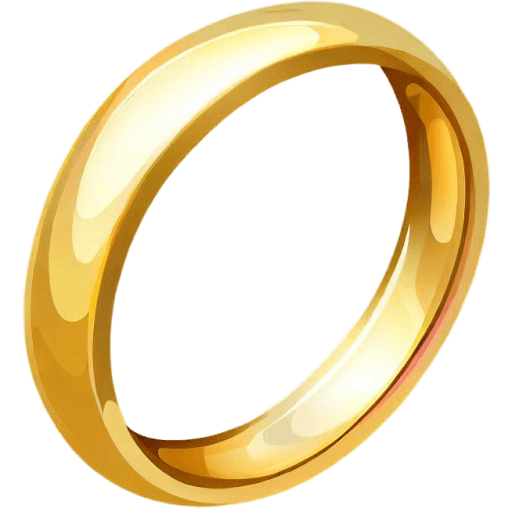
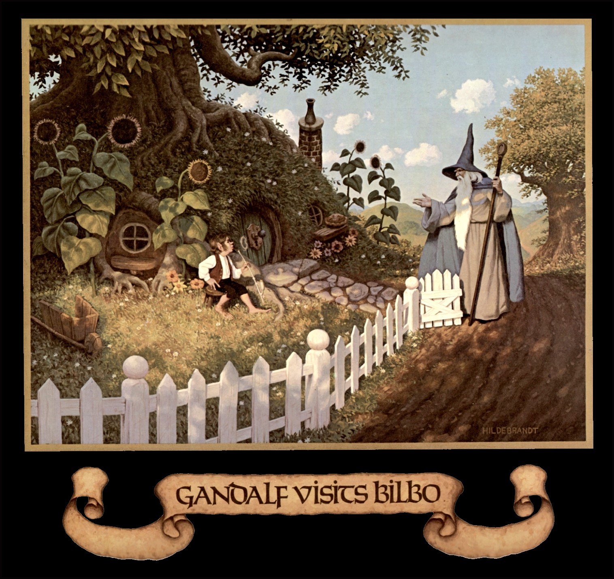
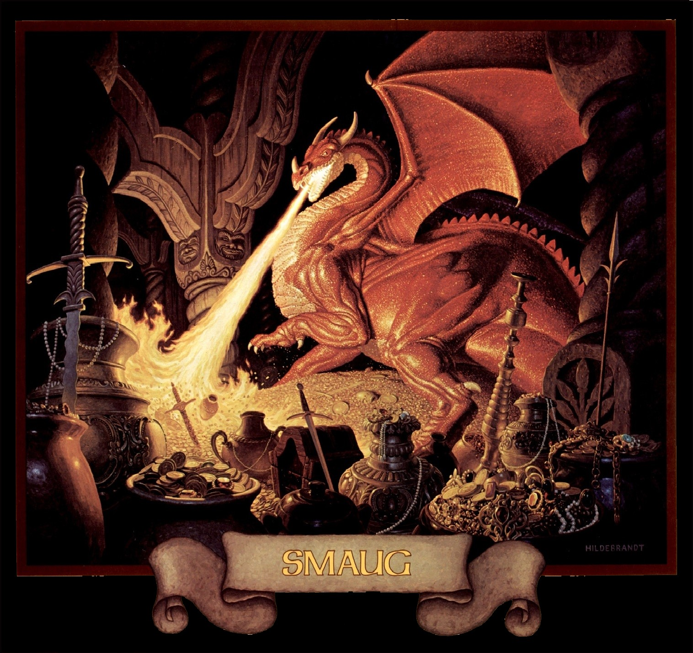

Pre-00's Tolkien Imagery
1. An Unexpected Party
2. Roast Mutton
3. A Short Rest
4. Over Hill and Under Hill
5. Riddles In The Dark
6. Out Of The Frying-Pan Into The Fire
7. Queer Lodgings
8. Flies And Spiders
9. Barrels Out Of Bond
10. A Warm Welcome
11. On The Doorstep
12. Inside Information
13. Not At Home
14. Fire And Water
15. The Gathering Of The Clouds
16. A Thief In The Night
17. The Clouds Burst
18. The Return Journey
19. The Last Stage
 